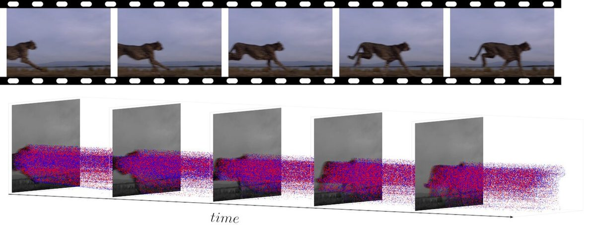
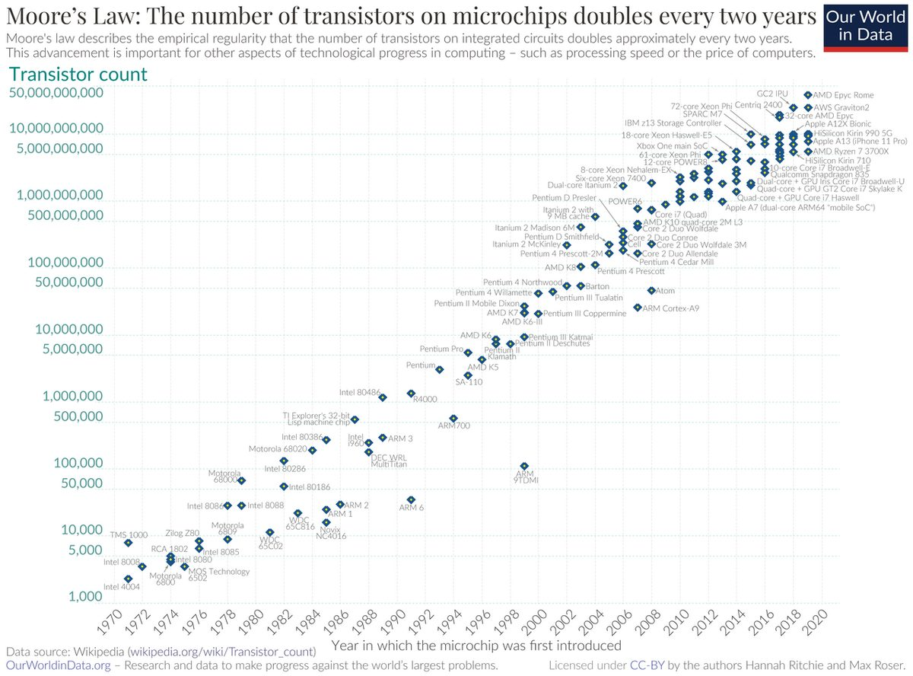

How it works
Processing only when something changes: biological principles in digital silicon.

Brains don't run on a clock
A neuron collects signals from thousands of others and fires only when enough arrive. Between spikes it uses very little energy. A spiking neural network copies this idea in digital form: each artificial neuron adds up its inputs over time and passes on a spike only when it crosses a threshold. At any moment, most neurons in the network are silent.
Sensors can work the same way

An event camera reports only what changes in the scene, as a sparse stream of events. Microphones and vibration sensors can be read the same way. A processor built for events can skip the quiet parts instead of crunching them.
Why now

Chips keep gaining transistors, but always-on devices are limited by their power budget, not by transistor count. Doing less work, rather than doing the same work faster, is the next lever.
One model, from laptop to chip

We design the models and the hardware together. A model is checked step by step against a reference, from the first simulation to the chip, so what you test is what you ship.